Rough scan connects your phone's camera to the studio. The studio shows a code. You scan it with your phone, and the phone's camera then appears live in the middle of the studio, where the stone usually is. Point the phone at a printed scanning board with the rock on it, and the phone finds the board, works out where the camera is above it, and outlines the rock. It draws these over its own picture and sends them to the studio, which draws them over the phone's picture too. This is the first step towards scanning a piece of rough with your phone: for now it shows what the phone sees, and does not yet build a model of the rock.
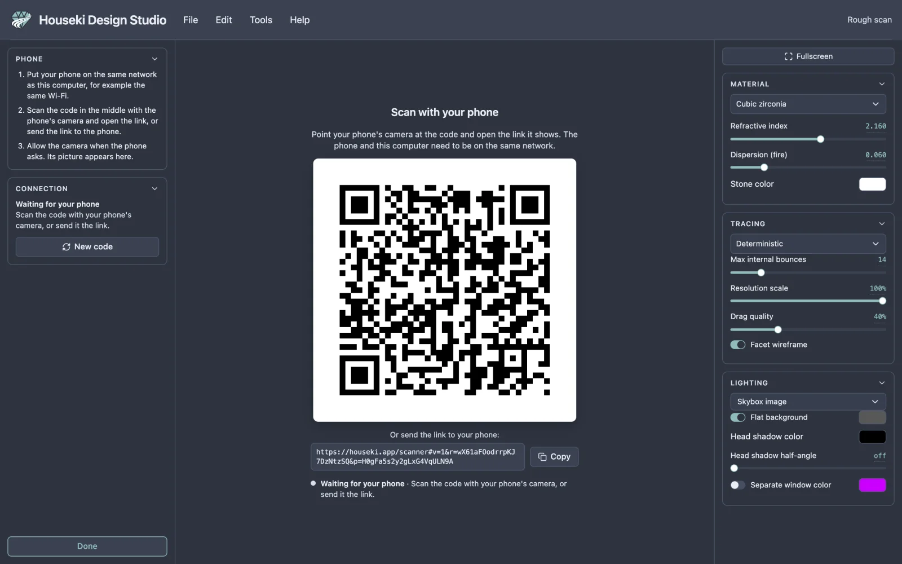
The phone and this computer need to be on the same network, for example the same Wi-Fi. The picture goes straight from the phone to the computer over that network. Both also need an internet connection while they connect.
To find the rock and where the camera is, the phone needs the Houseki scanning board: a sheet of black squares, 23 across and 17 down, with a small black-and-white square code in every white square, and a target in the middle where the rock goes. Each square must be 10 mm wide: print the sheet at its actual size, not "fit to page", and check one square with a ruler. Lay it flat, in even light, and put the rock in the middle of the target.
The board comes in four versions, which differ only in the middle: a sheet with no target and colour strips down both sides (the one the phone expects at first), a large blank target with two thin grey rings and small dots, the same large target without the dots, and a small target of one blank square. The large target, with or without dots, gives the cleanest outline: its blank paper surrounds the rock. The phone recognises which version it sees after a few seconds over the board, and you can also choose it on the phone (see below).
The printable board is not offered for download on this site yet.
Choose Tools > Rough scan. It works whatever is loaded. It is greyed out while another mode, such as editing a tier, is open, and its tooltip then says which one to finish first. While it is open, the top bar's mode readout says Rough scan.
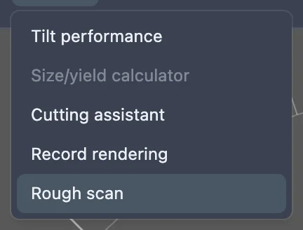
Under the code is the same link as text. Click Copy to copy it (the button says Copied for a moment), then send it to your phone, for example in a message to yourself, and open it there. You can also select the text and copy it yourself: one click selects all of it. If your browser will not copy it for you, the studio selects the link and tells you which keys copy it.
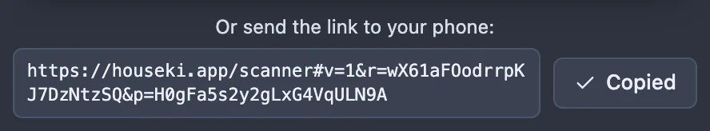
The link works like a key to this session: anyone who opens it can connect their camera, so send it only to your own phone.
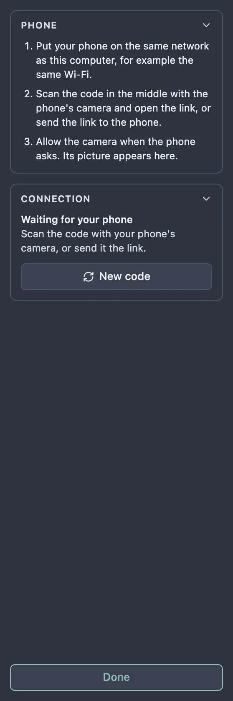
The Connection card on the left, and the line under the code, say how far it has got: Waiting for your phone until a phone opens the link, Connecting… while the phone's camera starts, and Streaming once its picture is showing.
The phone shows its camera full screen. Once it has connected to the studio, it gets its board finder ready, which takes a moment (the line above the connection says Getting the board finder ready... meanwhile). Then point it at the board with the rock on its target. Over the picture it draws what it finds:
If the red points sit on the corners of the printed squares and the yellow outline hugs the rock, the phone has the board and the rock right. The drawing follows the board while you move the phone: between its full searches for the board, the phone follows the squares from one picture to the next, and it draws each picture where the board is in that picture. If you stop suddenly, the drawing may overshoot for a moment and then settle back. If the points slide off the corners and stay off, the phone has lost track of where it is: hold it steady for a moment.
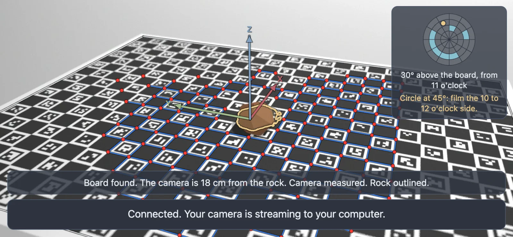
To be scanned well, a rock needs to be filmed from all round and from several heights. The box at the top right of the phone's screen keeps track of this while you film.
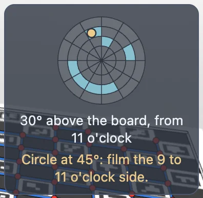
Move slowly: about half a minute for a full circle is right. The map starts empty each time the scanner page opens, including when you reload it.
When something is wrong with the picture, the phone says so in large letters just above the middle of the screen, where you are looking. It shows one warning at a time, the most important first. A warning appears once the problem has lasted about a third of a second, and goes half a second after it is fixed, so it does not flicker.
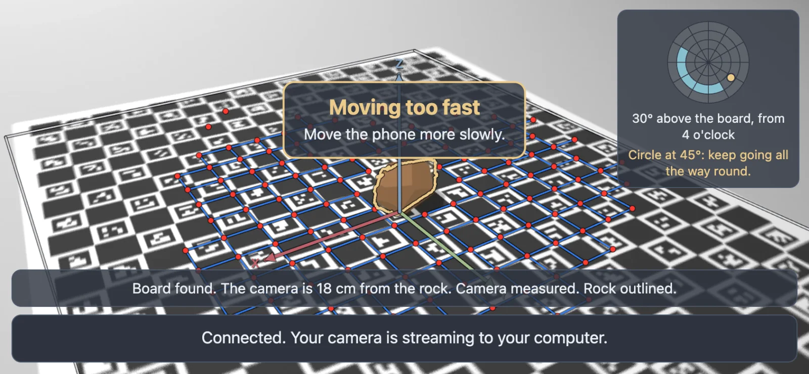
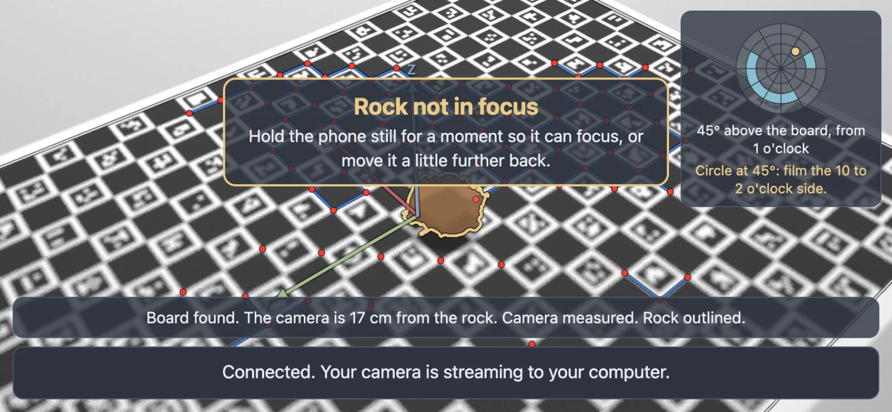
Views taken while a warning shows do not fill the map.
The line above the connection's says, in a few words, what the phone sees:
At the top of that line is the board chooser. Board: find it for me lets the phone recognise the version of the board, and once it has, says which one it found, for example Board: Large target with rings (found). If it gets it wrong (the rock's outline then takes in parts of the printed pattern), choose your version from the list: Large target with dots, Large target with rings, Small target or Colour strips. The phone remembers the choice for next time.
Press and hold the lines at the bottom of the screen for about half a second, and a line of numbers about how fast the phone works appears between them. Press and hold again to hide it. The phone remembers whether it is shown. The same numbers, in words, are in the studio's Speed row (see below), so you can read them on the computer instead.
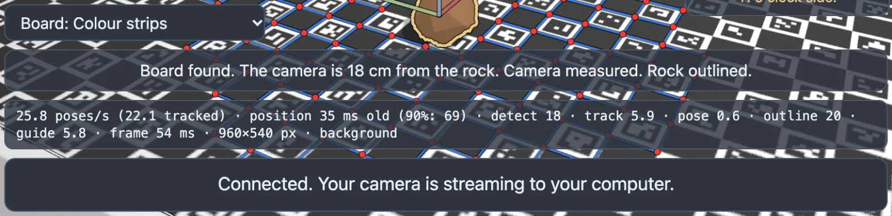
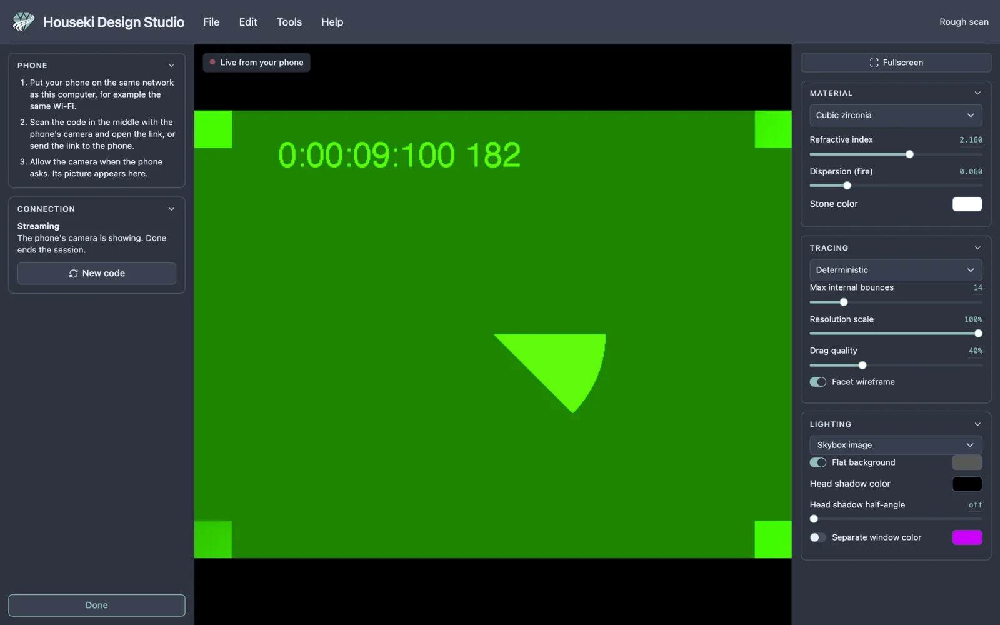
The picture fills the middle of the studio, with Live from your phone at its top left, and follows the phone as you move it. The board's grid, the arrows on the middle of the board and the rock's outline are drawn over it, as on the phone. They come from the phone up to ten times a second, so they can trail the picture for a moment when the phone moves quickly. If the phone stops sending them (it lost the board, or the page on it was closed), they fade within half a second and go after three.
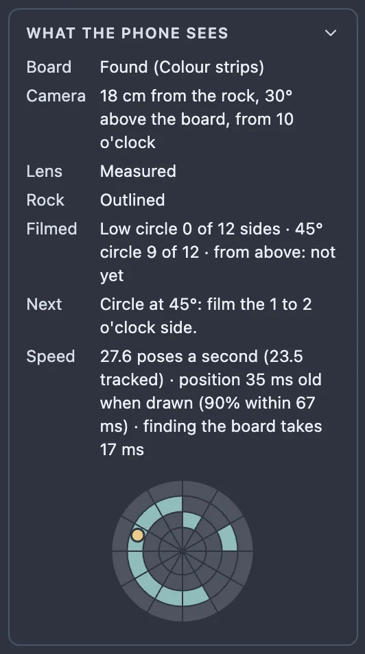
The What the phone sees card on the left reads the same out in words:
Under them is the same map as on the phone's screen.
If the phone has sent nothing for a few seconds, the card says so. A phone whose page is from before these measurements existed still streams its picture; the studio then simply shows the picture, with no drawing and no card.
If the phone closes the page or loses the network, the picture goes away, the studio says Phone disconnected, and the code comes back. Scan it, or open the link on the phone again, to reconnect.
New code in the Connection card ends the session and starts a new one with a new code and link. A phone that is connected is cut off, and the old link stops working. Use it if you sent the link somewhere you should not have.
If the studio cannot reach the internet to connect the phone, the code is replaced by a message saying so. Check this computer's internet connection; the code comes back as soon as the connection works.
Click Done at the bottom of the left-hand pane, or press Esc. The session ends, so the link the phone opened stops working, and the cutting instructions and the stone come back. The next time you open Rough scan it makes a new code and link. Nothing in the design changes, so Undo and Redo do nothing while the mode is open, and the design cannot be edited until it is closed. If you switch to fullscreen while it is open, the left-hand pane is hidden, and the first Esc then leaves fullscreen.